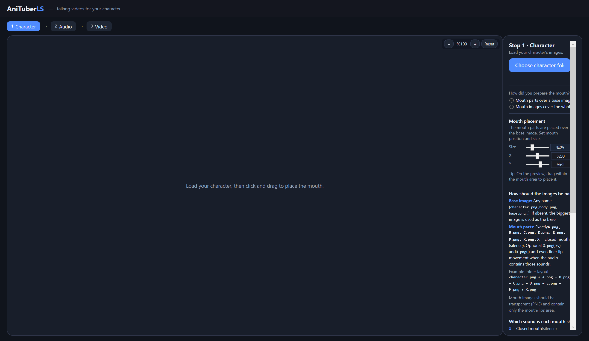
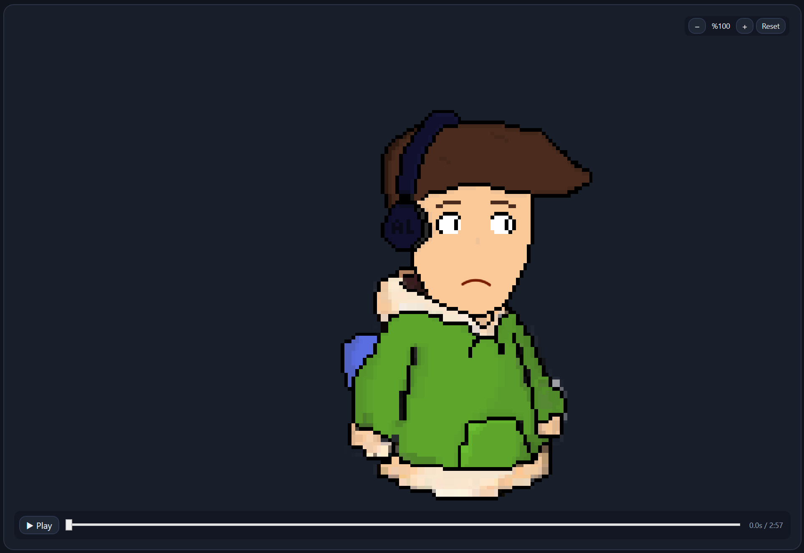
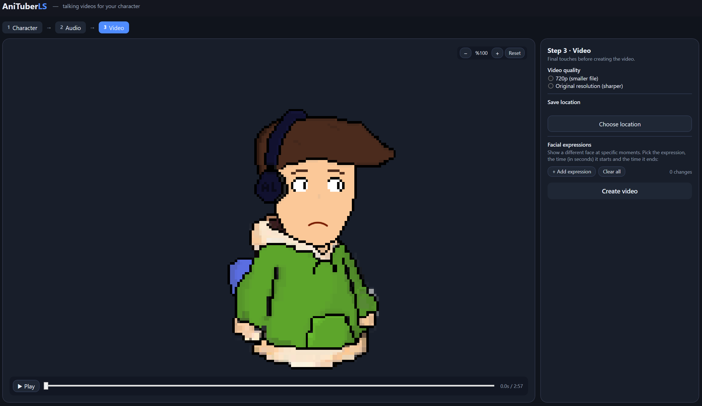

01
AI Voice Analysis
Analyze narration and identify human speech with high sensitivity, helping the animation focus on the actual voice.
AniStudioLS analyzes your voice and automatically creates synchronized mouth animation for your characters.

AniStudioLS is designed to automate the tedious parts of character lip syncing while keeping the creator in control.
Analyze narration and identify human speech with high sensitivity, helping the animation focus on the actual voice.
Convert speech into timed mouth shapes and automatically place them along the animation timeline.
Organize mouth shapes and character assets so they can be reused across different animations.
Prepare different character expressions and animation states for more expressive scenes.
Preview the generated animation and inspect how mouth movements line up with the narration.
Export the finished animation as a video when your project is ready.
A few glimpses of the current application interface.


AniStudioLS is an independent project developed with the assistance of modern AI coding and creative tools.
The website itself was also created with AI assistance. The goal is to experiment with how AI can accelerate both software development and creative workflows.
AniStudioLS is currently being developed.